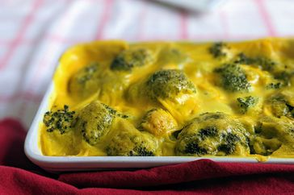

Brocolli Cheese Casserole

Description
My mom made this broccoli cheese casserole every Thanksgiving when I was little. We kids could never get enough! If you have children or have some coming to visit you as guests this Thanksgiving, I guarantee that they will eat (and enjoy) this veggie dish. It's also fabulous with a Christmas ham.
Ingredients
- Mushroom Soup
- Mayonaise
- Egg
- Onion
- Brocolli
- Cheddar Cheese
- Salt & Pepper
- Paprika
Steps
- Preheat the oven to 350 degrees F
- Whisk condensed soup, mayonnaise, egg, and onions together in a medium mixing bowl until combined.
- Place frozen broccoli into a very large mixing bowl and break it up if necessary; add soup mixture and mix well to coat. Sprinkle with cheese and mix well; spread mixture into the prepared baking dish. Season with salt, pepper, and paprika.
- Bake in the preheated oven for 45 minutes to 1 hour.